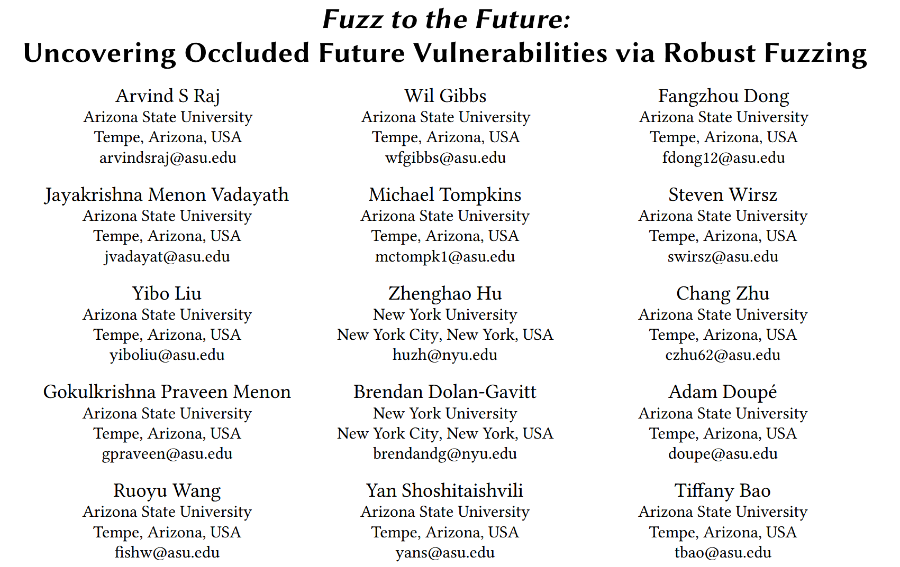

Fuzz to the Future: Uncovering Occluded Future Vulnerabilities via Robust Fuzzing [CCS 2024]

Fuzzing 按程序逻辑顺序和按循环的方式挖掘潜在崩溃点, 但是崩溃点之后的漏洞则未被触及. 本文提出一种挖掘崩溃点之后漏洞的解决方案FlakJack, 使 fuzzer 能够绕过即时崩溃点, 深入软件内部, 加快漏洞发现过程以及提高漏洞挖掘效率. 在 OSS-Fuzz 进行了广泛测试的项目中发现了28个新的漏洞.
一句话: 鲁棒模糊测试跳过当前崩溃点深入软件内部挖掘更深层次漏洞, 加快漏洞挖掘过程.
Contributions
- 提出鲁棒模糊测试方法, 可以应用于任何 fuzzer, 利用动态补丁使模糊器能够绕过崩溃, 并发现崩溃位置以外被遮挡的未来漏洞
- 实现 robust fuzzing 插件, 增强 AFL++ 为 FlakJack 适用于检测未来漏洞
- 验证 FlakJack 发现未来漏洞的能力, 在旧版本目标软件上测试, 累计节省 37 年, 并发现 28 个新漏洞
- https://github.com/sefcom/flakjack
Method
FlakJack 在一个 fuzzer 发现崩溃后启动. 它分析崩溃以确定崩溃类型和位置, 并提取有关崩溃时程序状态的信息. 利用这些信息, 鲁棒模糊测试会生成一个补丁, 防止崩溃再次发生, 并确定插入该补丁的最佳位置. 然后切换到补丁模式, 将之前生成的补丁插入到二进制文件中之前计算出的最佳位置, 从而防止崩溃再次发生.
如果补丁成功插入, 崩溃的输入就会被添加到模糊测试器的输入队列中, 该技术就会切换到以新生成的打过补丁的二进制文件为目标的模糊测试模式. 如果插入补丁失败, 它会恢复对之前使用的二进制文件进行模糊测试, 直到发现另一个崩溃.
Patch Mode
三个主要组件:
- Entry: 补丁的入口点, 分析当前程序状态, 并确定是否即将发生崩溃. 同时保存程序状态以便恢复
- Crash preventer: 修改程序状态以防止崩溃
- Exit: 使用 Entry 组件保存的数据恢复对程序状态所做的任何更改, 同时保存由 Preventer 所做的任何更改
Patch Generation for Robust Fuzzing
在 Robust Fuzzing 中, 作者为每种崩溃类型设计特定的补丁. 任何其他类型的崩溃都会被忽略, 并被视为补丁失败. 当前支持以下崩溃:
- divide-by-zero
- segmentation fault during memory access in the program under test (both memory read and memory write)
- segmentation fault at a function return
- crashes of two specific types in library functions

Evaluation
(1) How effective is robust fuzzing at accelerating the discovery of occluded future vulnerabilities when integrated with an existing fuzzing engine?
(2) Is robust fuzzing capable of detecting future bugs in current real-world projects?